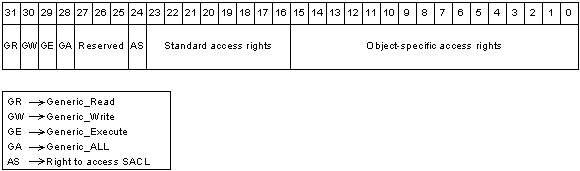

All securable objects arrange their access rights by using the access mask format shown in the following illustration.

In this format, the low-order 16 bits are for object-specific access rights, the next 8 bits are for standard access rights, which apply to most types of objects, and the 4 high-order bits are used to specify generic access rights that each object type can map to a set of standard and object-specific rights. The ACCESS_SYSTEM_SECURITY bit corresponds to the right to access the object's SACL.
Â
Â